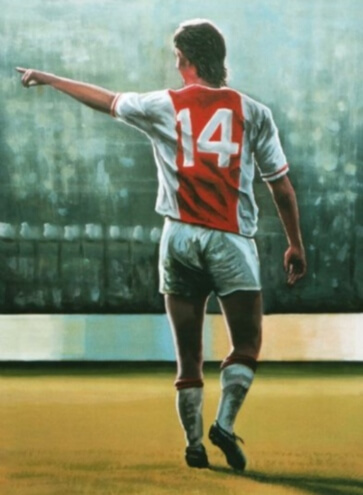
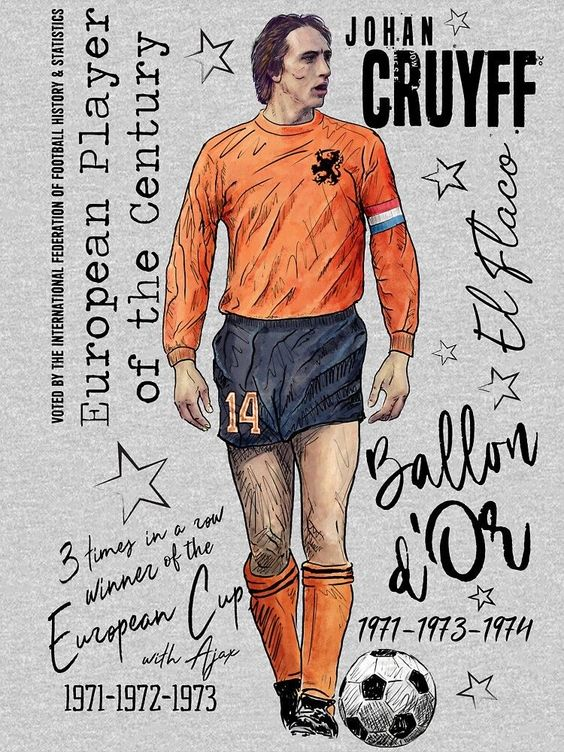
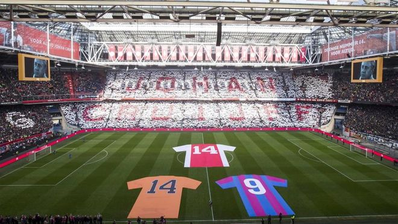

BIENVENIDOS AL JC F.C.
Este es el espacio para la comunidad latinoamericana de fans de uno de los más grandes jugadores de la historia del fútbol mundial, "EL FLACO". Aqui podrás conocer la historia, ver contenido y noticias relacionadas a la leyenda...


NOTICIAS
En visperas de un nuevo aniversario de su fallecimento se anuncia el partido a beneficio de la CRUYFF FUNDATION
“Jugar al fútbol es muy sencillo, pero jugar un fútbol sencillo es la cosa más difícil que hay.”